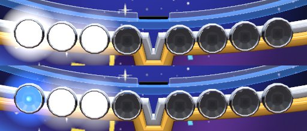
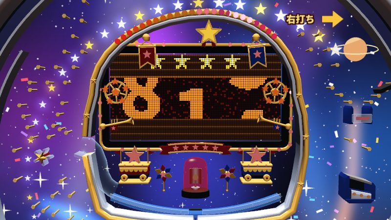
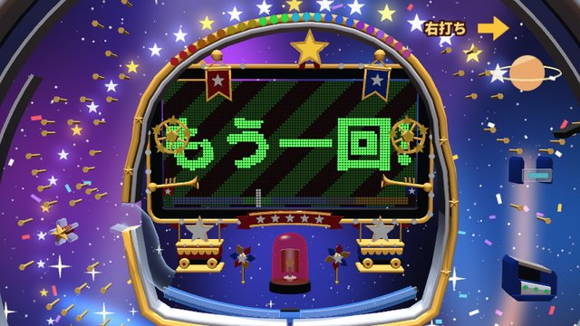
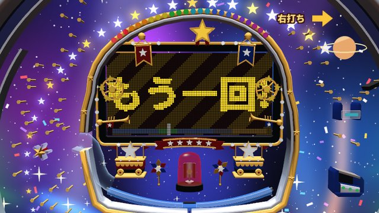

최종 갱신: 2026-11-28 (토)
STAR PARADE
 반면
반면
도트 표시와 경광등이 달린 확변 루프기. 확변(확률이 오르는 상태)은 다음 대박까지 이어진다. 보통 대박 뒤에는 시단(시간단축 모드) 15회가 붙고, 여기서는 찬스 타임이라고 부른다. 섬의 앞줄(남쪽) 서쪽 끝에 4대.
스펙
| 대박 확률 | 1/69.7 |
|---|
| 확변 중 | 1/20.0 |
|---|
| 확변 | 다음 대박까지 |
|---|
| 시단 | 15회 (찬스 타임) |
|---|
| 돌입률 | 약 69% (되돌림 포함) |
|---|
| 계속률 | 약 81% (되돌림 포함) |
|---|
| 라운드 | 6R / 3R (1R 10카운트) |
|---|
| 배출량 | 6R 약 480개 / 3R 약 240개 |
|---|
| 상구(입구별 반환 구슬) | 헤소 3 / 전츄 2 / 어태커 8 / 입상구 3 |
|---|
| 250개로 도는 횟수 | 약 35회 (시산, 멈춤 치기 포함) |
|---|
| 기계할 | 약 141% (시산) |
|---|
※ 찬스 타임 15회 안에 다시 당첨되는 되돌림은 약 19%. 보더(손익분기 회전수)는 조사 중.
대박 배분
| 입구 | 6R 확변 | 3R 확변 | 3R 통상 |
|---|
| 헤소 | 10% | 51% | 39% |
|---|
| 전츄 | 25% | 51% | 24% |
|---|
※ 헤소(배꼽)는 시동 구멍, 전츄(전동 튤립)는 서포트 중에 열리는 구멍. 777은 6R 확변, 그 밖의 홀수는 3R 확변, 짝수는 3R 통상. 짝수라도 확변 승격 찬스가 있다.
보도와 전서포
| 통상 | 확변, 찬스 타임 |
|---|
| 보도 당첨 | 1/16 | 9/10 |
|---|
| 보도 변동 | 12초 | 1.2초 |
|---|
| 전츄 개방 | 0.15초 ×1회 | 1.6초 ×2회 |
|---|
※ 보도(普図)는 구슬이 게이트를 지날 때 돌아가는 작은 추첨. 전서포(電サポ)는 전츄가 자주 열리는 모드.
치는 법
- 세기는 자동
- 대박, 확변, 찬스 타임 중에는 알아서 오른쪽 치기로 바뀐다
| 왼쪽 치기 | 천장 못, 하카마, 풍차, 길 못, 점프 못, 생명 못을 지나 헤소로. 역물 왼쪽 어깨의 워프에 들어간 구슬은 스테이지를 굴러 가운데 구멍과 터널로 떨어져, 헤소 바로 위로 나온다 |
|---|
| 오른쪽 치기 | 반환 고무, 게이트, 전츄, 어태커 순 |
|---|
모드
| 모드 | 확률 | 구별하는 법 |
|---|
| 통상 | 1/69.7 | 평범한 테두리 |
|---|
| 확변 | 1/20.0 | 액정 테두리를 빨강과 금색 빛이 돈다. 반면의 빛은 붉은 보라 |
|---|
| 찬스 타임 | 1/69.7 | 파란 테두리. 윗변에 남은 횟수, 남은 5회부터 카운트다운 |
|---|
 확변 중
확변 중
 찬스 타임 중
찬스 타임 중
연출 신뢰도
※ 신뢰도는 그 연출이 나왔을 때 대박으로 이어지는 비율 (해석값, 통상 시). 50% 이상과 확정은 빨간 글씨.
보류 색
| 색 | 신뢰도 |
|---|
| 파랑 | 1.7% |
| 초록 | 7.0% |
| 빨강 | 31.0% |
| 금색 | 64.1% |
| 무지개 | 확정 |
리치
| 연출 | 신뢰도 |
|---|
| 노멀 리치 | 3.1% |
| 슈퍼 리치 | 25.4% |
| 전회전 | 확정 |
| 최종 결전 (PUSH) | 51.6% |
예고
| 색 | 밤하늘 예고 | 유성 예고 |
|---|
| 전체 (색 무관) | 1.3% | 18.4% |
| 흰색 | 0.2% | 3.5% |
| 파랑 | 0.7% | 10.1% |
| 초록 | 1.7% | 23.1% |
| 빨강 | 6.3% | 52.9% |
| 금색 | 23.5% | 83.8% |
| 무지개 | 확정 | 확정 |
스텝업 예고
| 연출 | 신뢰도 |
|---|
| 스텝 1까지 | 4.3% |
| 스텝 2까지 | 10.6% |
| 스텝 3까지 | 34.1% |
| 스텝 4까지 | 66.9% |
| 스텝 5까지 | 91.0% |
의사연
| 연출 | 신뢰도 |
|---|
| ×2 | 6.0% |
| ×3 | 28.7% |
| ×4 | 50.9% |
변동 개시
| 연출 | 신뢰도 |
|---|
| 뜸 들이기 | 1.6% |
| 역회전 | 4.0% |
| 떨림 | 13.2% |
| 하나씩 | 22.9% |
| 플래시 | 48.8% |
| 낙하 | 1.9% |
| 빨려 들기 | 2.1% |
| 오른쪽에서 | 10.8% |
| 캐릭터가 밀기 | 41.4% |
숫자 도는 방식
| 연출 | 신뢰도 |
|---|
| 거꾸로 | 2.1% |
| 넘기기 | 7.1% |
| 드럼 | 11.4% |
| 셔플 | 24.0% |
예조 (위를 달리는 캐릭터)
| 연출 | 신뢰도 |
|---|
| 동료 (3마리) | 1.1% |
| 대행진 (6마리) | 2.6% |
| 금색 | 12.9% |
| 무지개 | 66.0% |
리치 중 예고
| 연출 | 신뢰도 |
|---|
| 밤하늘 예고 | 14.8% |
| 유성 예고 | 30.2% |
슈퍼 리치 후반
| 연출 | 신뢰도 |
|---|
| 프레임 넘기기 | 11.3% |
| 덧칠 | 29.9% |
| 카운트다운 | 18.5% |
| 유성 | 57.7% |
리치 끝나는 방식
| 연출 | 신뢰도 |
|---|
| 딱 | 6.5% |
| 미끄러짐 | 18.8% |
| 되돌아감 | 21.7% |
| 흔들흔들 | 9.4% |
| 막판 정지 | 29.4% |
찬스 눈
| 연출 | 신뢰도 |
|---|
| 311 (뒤쪽 보류가 당첨) | 60.7% |
확정 연출
무지개 보류, 블랙아웃, 변동 개시 시 경광등, 부활, 프리즈, 전소등
연출 해설
숫자
숫자는 주황색 도트 글자이고, 평소에는 세로로 흐르며 돈다.
보류
보류는 헤소와 전츄에서 각각 4개까지, 전츄가 우선. 색은 파랑, 초록, 빨강, 금색, 무지개 순이고, 금색부터 격열, 무지개는 확정.
 보류 램프 (빛나는 것이 보류)
보류 램프 (빛나는 것이 보류)

보류 변화 (맨 왼쪽이 흰색에서 파랑으로)
예고와 의사연
- 밤하늘 예고는 약한 쪽, 유성 예고는 뜨거운 쪽. 둘 다 색이 6단계 (흰색, 파랑, 초록, 빨강, 금색, 무지개). 유성은 빨강부터 격열, 무지개는 확정
- 예고는 리치 중에도 나온다
 유성 예고
유성 예고

스텝업 4단계
예고의 색 (컷)
 밤하늘 예고 (초록)
밤하늘 예고 (초록)
 유성 예고 (파랑)
유성 예고 (파랑)
 리치 중 밤하늘 예고 (금색)
리치 중 밤하늘 예고 (금색)
의사연 (컷)

1회째 (초록)
 2회째 (빨강)
2회째 (빨강)

3회째 (금색)
리치
- 리치 선은 금색, 슈퍼의 숫자는 빨강
- 노멀 리치 연출 방식은 표준과 확대. 슈퍼 리치 후반 유형은 프레임 넘기기, 카운트다운, 덧칠, 유성
- 유성: 별똥별이 가운데 숫자에 5번 맞고, 맞을 때마다 숫자가 바뀐다. 4번째는 맞기 1개 앞의 숫자
- 슈퍼 중에는 도트 표시의 별과 달이 응원한다. 당첨이면 달이 보름달이 된다
- 최종 결전은 도트 표시 앞에 PUSH 버튼이 나온다
슈퍼 리치의 흐름 (컷)
 1. 시작 컷인
1. 시작 컷인
 2. 후반의 「激アツ」(격열)
2. 후반의 「激アツ」(격열)
 3. 최종 결전
3. 최종 결전
 4. PUSH
4. PUSH
컷인과 PUSH 그림은 여러 종류가 있다
경광등
역물(가동 장치) 안의 회전등. 돌면 대박.
대박일 때 도는 타이밍
| 변동 개시 시 | 4% |
| 리치 성립 시 | 18% |
| 당락 시 (리치의 결판) | 78% |
프리미엄, 숨겨진 요소, 잡학
※ 스포일러 있음. 누르면 열린다
프리미엄 (대박 확정)
| 연출 | 내용 |
|---|
| 블랙아웃 | 변동 개시 시에 길게 암전되고, 그대로 전회전으로 |
|---|
| 프리즈 | 변동 개시와 동시에 전부 멈추고 소리가 사라지며, 번쩍인 뒤 그대로 전회전으로 |
|---|
| 전소등 | 액정과 기계의 조명 장식이 전부 꺼지고 소리도 없어지며, 번쩍인 뒤 그대로 전회전으로 |
|---|
| 변동 개시 시 경광등 | 회전 맨 처음에 경광등이 돈다 |
|---|
| 무지개 | 무지개 보류, 무지개 예고 (밤하늘, 유성) |
|---|
| 전회전 | 블랙아웃, 프리즈, 전소등 뒤에만 나온다. 333이나 777로 맞는다. 끝까지 돌아 무지개색인 채 멈춘다 |
|---|
| 부활 | 슈퍼에서 꽝처럼 보여 준 뒤 당첨 |
|---|
 전회전 (컷. 무지개 숫자가 333에서 멈춘다)
전회전 (컷. 무지개 숫자가 333에서 멈춘다)
숨겨진 요소
- 확변 승격 찬스: 짝수로 맞으면 일단 찬스 타임(시단 15회)에 들어간다. 시단의 마지막 회전이 빗나간 뒤 재변동해서 홀수로 멈추면 확변으로 승격. 3R 확변의 30%는 짝수로 맞춘 뒤 승격하고, 3R 통상의 40%는 승격에 도전했다가 실패한다
- 보류 선읽기: 보류는 들어갈 때 진짜 색보다 1~2단계 아래로 보이는 경우가 있다. 기다리는 동안 한 단계씩 올라가고, 다 못 오른 몫은 변동 개시 시의 찬스 업에서 오른다. 변동 개시 시에 흰 보류가 깜빡이기만 하면 가세(페이크)
- 찬스 존: 선읽기 존. 앞에 보류가 2개 이상 있을 때 나온다. 존이 오면 최소한 슈퍼 리치
- 기대도 미터: 테두리 좌우의 조명 장식이 아래부터 파랑, 초록, 빨강, 금색 순으로 찬다. 무지개까지 오르는 것은 무지개 보류, 블랙아웃, 전회전, 당락에서 당첨됐을 때뿐
- 별 역물: 슈퍼의 2단째에서 떨어지면 92.9%. 아쉽게 돌아가도 부활에서 다시 떨어진다
 확변 승격
확변 승격
잡학
- 찬스 눈 311: 리치 없는 꽝에서 311로 멈추면 금색으로 빛나며 튄다. 뒤쪽 보류에 당첨이 있으면 나오기 쉽고 60.7%. 우연히 311로 멈추는 일은 없다
- 확변, 찬스 타임 중에는 예고, 스텝업, 의사연, 변동 개시 연출이 나오지 않는다
데이터 카운터
 데이터 카운터
데이터 카운터
기계 위에 대박, 연짱, 스타트, 전회의 4개와 가게 안의 인원.